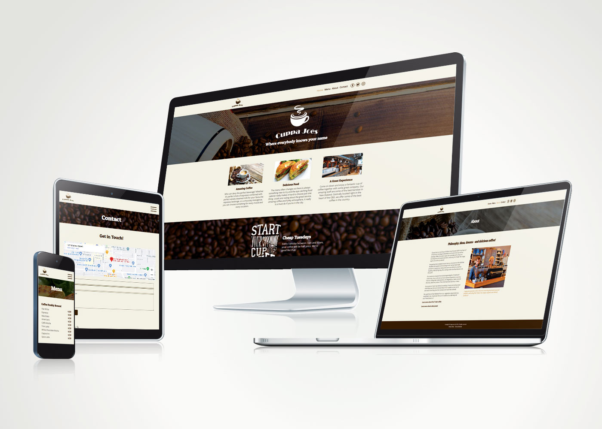
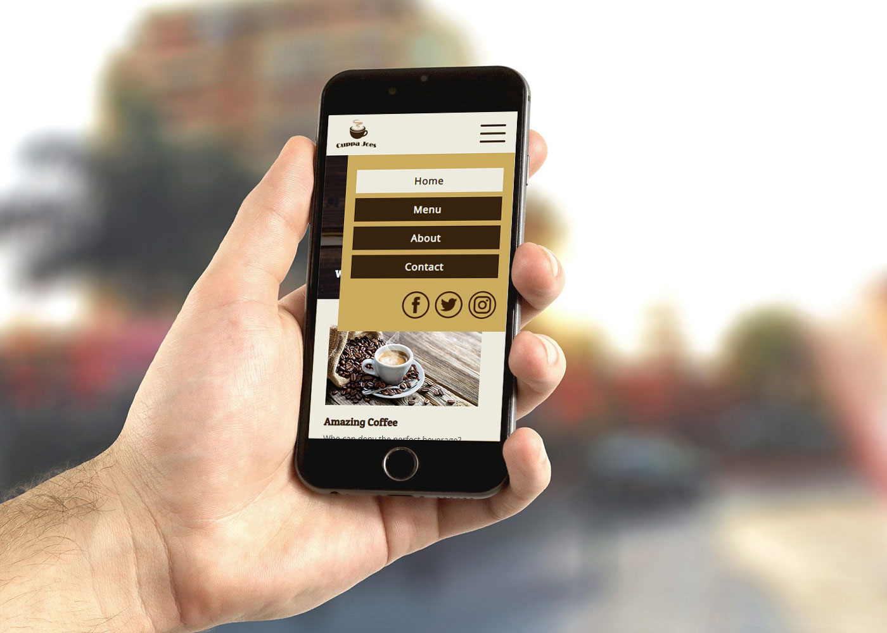

Web dev
Cuppa Joe's
A multi-page website for Cuppa Joe's, a Christchurch café with a warm, community-focused brand. Built as a student project, the site covers the café's menu, story, and contact details — with a design that matches the café's unpretentious, welcoming character.